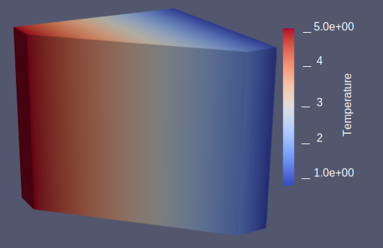
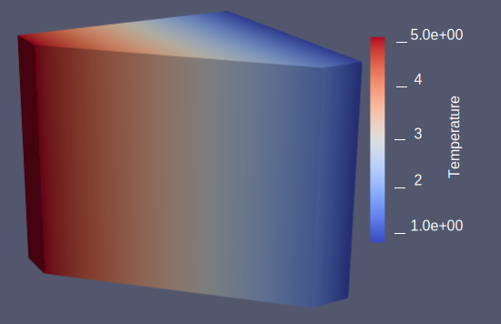

Geometric Multigrid for Unstructured Finite Elements
Recently I've spent a bit of time implementing and studying the effecacy of utilizing geometric multigrid for solving PDEs on unstructured grids.
The key aspect and difficulty of such a technique is implementing it in an efficient, parallel manner which is independent of the input parameters. As such, much of the solver infrastructure was implemented in the open source libMesh library while examples of the optimality of the technique were demonstrated in the GRINS multiphysics application built on top of libMesh. libMesh is used to partition the domain amongst processors, refine the mesh, and then manage local-to-global degree of freedom information as well as ghosted element info which must be periodically communicated amongst processors.The multigrid technique then utilizes such info to construct a grid hierachy and projection and interpolation operators which become fundamental pieces to the overall algorithm. As a simple example of this we can consider a square domain which is forced internally with some heat source given by:
This gives rise to a steady state solution as depicted below.
As a simple example of this we can consider a square domain which is forced internally with some heat source given by:
This gives rise to a steady state solution as depicted below.
 As expected, this gives rise to optimal convergence rates which we can compute by comparing our computed solution to an exact solution generated via the method of manufactured solutions.
As expected, this gives rise to optimal convergence rates which we can compute by comparing our computed solution to an exact solution generated via the method of manufactured solutions.
 By changing a few runtime parameters from the command line we can instead solve a 3D problem where instead we heat one wall, insulate the rest, and upon solution we can recover the expected linear temperature gradient.

We can similarly study more exotic physics. For example here we consider thermally driven flow which utilizes a Boussinesq approximation to couple the energy balance equation to that of the incompressible Navier Stokes formulation discussed previouslly. In the figure below we can observe the formation of thermal vortices, a phenomena which is particularly difficult black box solvers to resolve.
By changing a few runtime parameters from the command line we can instead solve a 3D problem where instead we heat one wall, insulate the rest, and upon solution we can recover the expected linear temperature gradient.

We can similarly study more exotic physics. For example here we consider thermally driven flow which utilizes a Boussinesq approximation to couple the energy balance equation to that of the incompressible Navier Stokes formulation discussed previouslly. In the figure below we can observe the formation of thermal vortices, a phenomena which is particularly difficult black box solvers to resolve.
 testing math $x=4$
testing math $x=4$
© Boris Boutkov 2019. All rights reserved.
Hosted through github pages